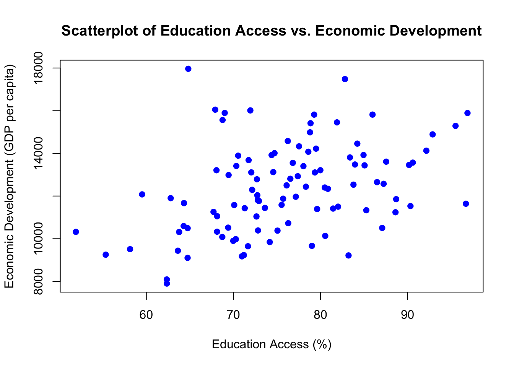

For each exercise, write your answers in a well-formatted combination of text and code blocks. You are required to submit your answers in Quarto because of its ability to combine text and code seemlessly.
The guidance in this document uses R, but you can use R or Python as you wish, except for Exercise 11, which must be in R. Points may be deducted for untidy formatting. You will submit your complete .qmd file and your rendered PDF.
You may collaborate with your classmates, but every keystroke that goes into your final work must be your own. Do not copy or paste another student’s exact language or substantive or numeric examples. You can talk about the assignment and study together, but I expect you to submit your own work. I understand that there are only so many ways to code simple mathematical operations. But if I see substantive examples, critical reasoning/interpretations/responses, or vectors of example numbers that are the same, this can be problematic from an academic integrity standpoint. Make this your own work.
I assume that some of you will find using an LLM like Google Gemini or ChatGPT helpful in completing this assignment. I do not object to you using these tools to find information or generate ideas. However, academic integrity and good professional practice require that you not copy the results of an LLM query blindly or uncritically.
You should know that LLMs include a lot of comments in their code when you ask it a coding question. If I see an unnatural level of documentation in your code, I may assume that you copied it directly from an LLM. Similarly, many LLMs are quite verbose and explain every step when you ask them a question. I don’t need you to document every line in painstaking detail. Answer the questions presented directly and concisely. This presentation may factor into the points you earn on a question.
Objectives
These exercises will help you develop your skills with the following:
Apply the statistical tools for measuring variation and correlation (CLO 1)
Estimate a bivariate regression model to make predictions (CLO 1)
Implement statistical hypothesis testing (CLO 1)
Evaluate p-values, standard errors, and confidence intervals (CLO 1)
Explain how confounders and bias undermine research results (CLO 1)
Assess the ability of regression models to control for confounders (CLO 1)
Recommended Timeline
I highly recommend completing this Problem Set over the course of several weeks. Here’s one possible timeline you might follow
Exercise 1 - Exercise 10 (1 week)
Exercise 11 (1 week)
Exercise 12 - Exercise 14 (1 week)
Exercise 1 - 8 points
Identify two different features of the world that you suspect are positively correlated and have a causal relationship. Explain why you think these two features of the world are positively and causally related.
1.1 - A positive correlation is one where both variables move in the same direction. Access to education and economic development could be positively correlated and have a causal relationship. Having access to education makes it possible for the workforce to learn more skills that can be used in job creation and economic growth, which can be argued as a cause for economic development. Also, as economic development continues in a region, it can invest into resources for education.
Identify the unit of observation and describe how you would measure these features of the world across these units.
1.2 Your answer here. - The unit of observation for analyzing a relationship between access to education and economic development would be countries or regions. Access to education would be measured by enrollment rates, standardized test scores, number of educational institutions in a specific region, or literacy rates.Economic development would be measured by poverty rates, Gross Domestic Product, and employment rates.
Create some fake data in R that “measures” these features of the world, and are positively correlated. In R, use data.frame() or tibble(). Save the data to an object. (Don’t print the data)
1.3 Your answer here. - 2pt
Code
set.seed(123) # Number of countries/regionsn <-100# Simulate access to education (enrollment rate in percentage)education_access <-rnorm(n, mean =75, sd =10)# Simulate economic development, positively correlated with education accesseconomic_development <-5000+ (education_access *100) +rnorm(n, mean =0, sd =2000)#fake data frame fake_data <-data.frame(country =paste("Country", 1:n),education_access = education_access,economic_development = economic_development)# Saving the data to an objectfake_data_object <- fake_data
Calculate the correlation coefficient. In R, use command cor().
1.4 Your answer here. - 1pt
Code
# Calculation of the correlation coefficientcorrelation_coefficient <-cor(fake_data_object$education_access, fake_data_object$economic_development)correlation_coefficient
[1] 0.3895619
Make a scatterplot that visualizes the relationship. In R, use command plot() or ggplot(). Don’t paste your scatterplot, just share your code.
1.5 Your answer here. - 1pt
Code
###Scatterplotplot(fake_data_object$education_access, fake_data_object$economic_development,main ="Scatterplot of Education Access vs. Economic Development",xlab ="Education Access (%)",ylab ="Economic Development (GDP per capita)",pch =19, col ="blue")

Exercise 2 - 4 points
Identify two different features of the world that you suspect are negatively correlated but where the negative correlation is not causal. Explain why you think these two features of the world are negatively and not causally related.
2.1 Negative correlation is a relationship between two variables that tend to move in opposite directions. Therefore, weight and exercise are negatively correlated. As people exercise, weight tends to go down. However, exercise and weight are not exclusively causal. While exercise can contribute to weight loss there are other factors that affect weight such as diet, genetics and age.
Identify the unit of observation and describe how you would measure these features of the world across these units.
2.2 The unit of observation would be individuals who exercise. Weight would be measured by self-reported weight, measured weight using scales and BMI (Body Mass Index). Exercise would be measured by frequency of exercise (daily, monthly), duration of exercise, intensity of exercise and type of exercise.
Exercise 3 - 10 points
Create a vector (in R, use command c()) of 25 integers between the values of 0 and 100 with “high” variance and a mean of below 50. Don’t use any functions (except c()). Some integers can be repeated in the vector, but use a variety of integers to satisfy the criteria above - use a range of different values so you can see the variance.
Calculate the mean, variance, and standard deviation “by hand” in R, using the formulas for these statistics - don’t use functions or control flow (loops) (except to calculate the square root, in R, use command sqrt()). Show your mathematical operations.
Note that you have to get all three of these values correct to get full points on this question.